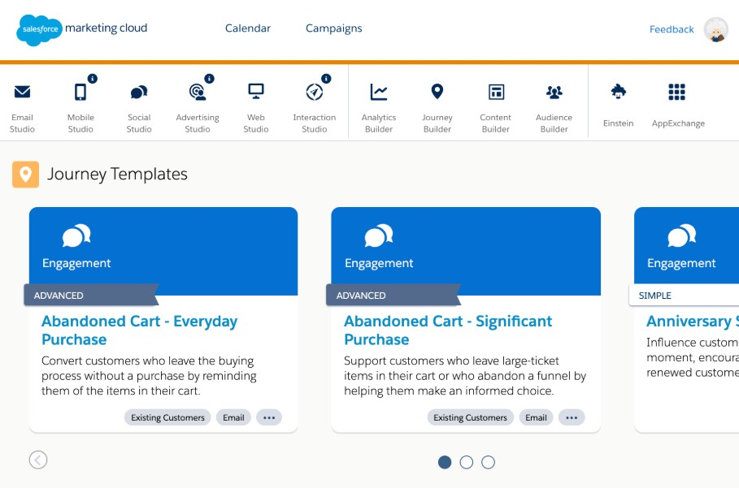
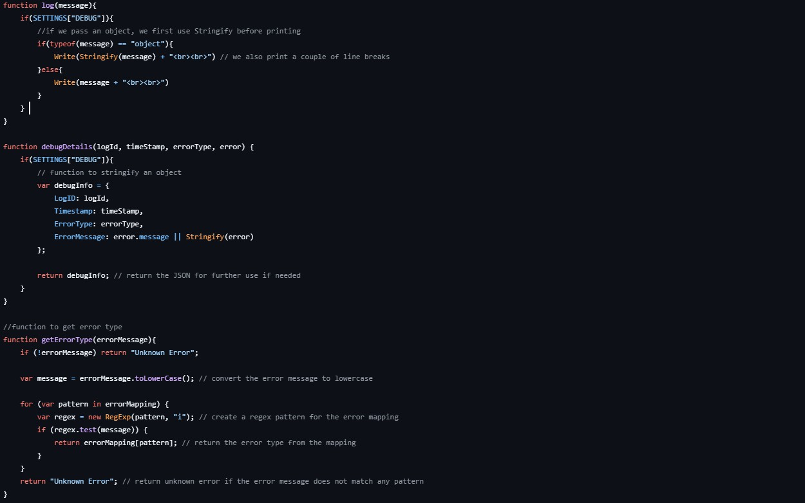
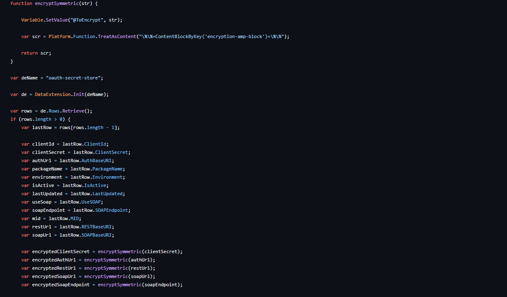
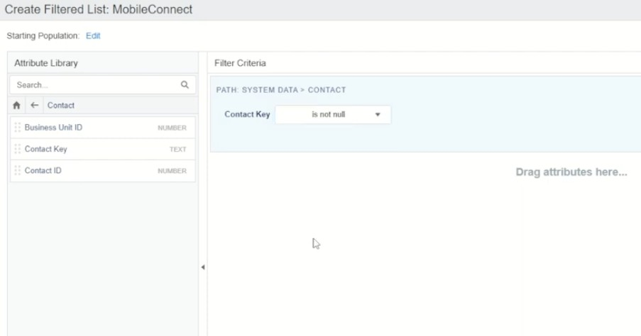

SFMC Integrations
Responsive and useful integrations to add to any SFMC instance.

Overview
While working with Salesforce Marketing Cloud, I found there are many holes within the platform that you can patch yourself with these integrations!
The Challenge
While working on Salesforce Marketing Cloud, I realized there were a few tools I had to create to improve my workflow as a developer, but aid my team as well. The first being debugging, as a developer SFMC gave you very few options to technically review your work. Previews and test sends proved a limitation as it was very hard to replicate live data.
The more technically you dive into SFMC, the more you have to build and be innovative with your solutions. I found that while working with API's SFMC lacked security and keeping your API Secret Key using best practice proved difficult.
The last integration I had made was one which takes about 30 seconds and is a massive help. SFMC does not contain a Data Extension that hold all contacts. A contact can be a SMS, Email, or App subscriber. SFMC may contain Data Extensions that hold all email or all SMS, but lacked a central all contacts Data Extension.
The Process

Managing errors and bugs is a tall task to tackle within SFMC. Typically, the process is mostly trial and error with previewing and sending test sends. This angle proved to be time consuming. SFMC holds the power of cloud pages, a web page wher you can combine AMPScript and JavaScript with the power of HTML. This in conjunction with a script allowed me to create my own error mapping system with the most common errors I ran into while developing. The process is simple: I create a key value map with all the most common errors, I then wrote the functions for my debugging process, I add all the Data Extension keys and locations, and then insert the functions within a try() and catch(e) statement.
This is useful because now, another feature of a CloudPage, is that you can reference HTML blocks within the CloudPage. Meaning all I have to do is update the HTML block within email builder and refresh my CloudPage and whatever I'm working on will either be succesful or show me and log the error in my data extension.

To solve my API security issue I built a secret rotation automation. This included integrating SFMC's new OAuth practices within my work. The process goes as this, when updating the secret, someone must receive the new key and keep it secure, this must remain manual for security purposes. After this though, I built an Data Extension where I would paste that new key in. Keeping secret and client keys within a Data Extension is never a good practice, however using SFMC's automation script tool I built a script that used AMPScript, a language unique to SFMC, to encode this secret key and update it within that Data Extension. Now you can reference that key, as well as a token by adding a simple line of code that can be copy pasted anywhere with no security risk! All you do is add the decoding script that references the secret token and to update your authentication token I created an automation that references the same Data Extension. You can copy and paste this integration anywhere with minimal security risk and it will always stay up to date.

To solve my contacts issue I reached within SFMC's more unique integrations. SFMC allows you in SQL to select a a filtered Mobile List. This is important because Mobile Lists allow you to directly access your All Contacts list with SFMC, which you cannot do using SQL. So simple you create a Data Extension with this All Contacts Mobile List Mirror and now you have a Data Extension for All Contacts. To keep it updated add an automation to refresh your Mobile List and whatever cadence you'd like.
Technologies
- HTML
- AMPScript
- JavaScript
- GitHub
- AWS
What I Learned
This project helped me strengthen my developer skills. As a developer there will be times you have to work within legacy tools or platforms. These platforms contain minimal updated tools to help you with the quick advancing development practices. It's important to be innovative and always look forward to fixing and aiding your team.